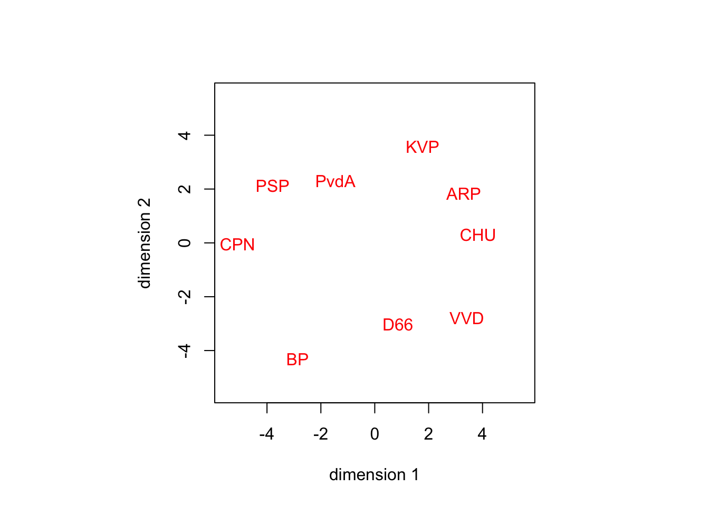
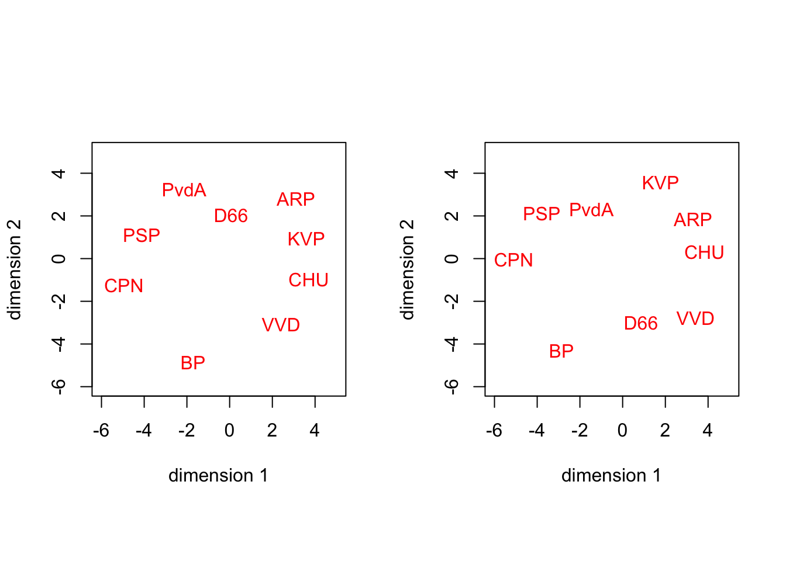
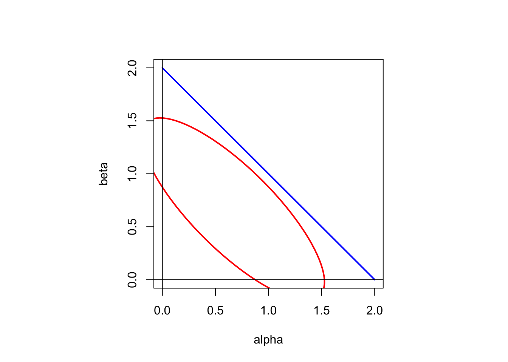
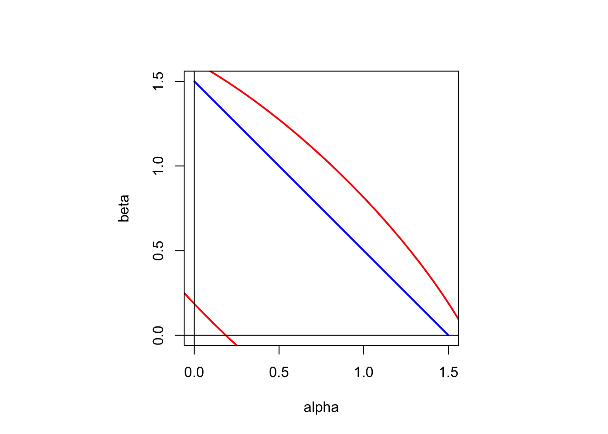
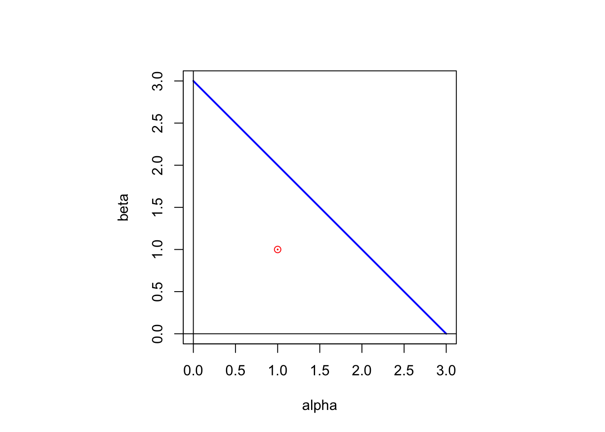
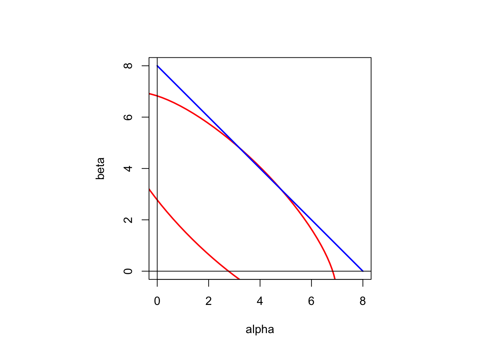

**`r corollary_nums("full_result", display = "f")`** If $p=n-1$ then $\Delta\in\mathfrak{D}(X)$ if and only if $\Delta=D(X)$ if and only if $\sigma(X)=0$.24 Inverse Multidimensional Scaling
In MDS we start with dissimilarities and we find a configuration that locally minimizes stress. We know that the equation we have to solve is \(B(X)X=VX\). MDS maps dissimilarities into configurations by finding one (or, ideally, all) solutions of this equation. In Inverse MDS (IMDS) we start wth the same equation \(B(X)X=VX\), but now we find all dissimilarity matrices for which a given configuration is a local optimum, or at least a stationary point. Thus we solve for \(\Delta\) for given \(X\), and we study the inverse of the MDS map.
Inverse MDS was first described in “Inverse Multidimensional Scaling” (2007), R code was provided in De Leeuw (2012), and some elaborations are in De Leeuw, Groenen, and Mair (2016b). This chapter leans heavily on De Leeuw, Groenen, and Mair (2016b), but we have reformulated some results and pruned some of the examples.
In studying the IMDS mapping we limit ourselves, unless explicitly stated otherwise, to configurations \(X\) that are regular, in the sense that \(d_{ij}(X)>0\) for all \(i\not= j\). This can be done without loss of generality. If some of the distances are zero, then the corresponding IMDS problem can be reduced to a regular problem with a smaller number of points (De Leeuw, Groenen, and Mair (2016d)). Also, an \(n\times p\) configuration \(X\) is normalized if it is column-centered and has rank \(p\). For such \(X\) there exist \(n\times (n-p-1)\) centered orthonormal matrix \(K\) such that \(K'X=0\). In IMDS we will always assume that \(X\) is both regular and normalized. We also assume, unless it is explicitly stated otherwise, that all off-diagonal weights \(w_{ij}\) are non-zero.
In “Inverse Multidimensional Scaling” (2007) two different basic IMDS versions are discussed. Both versions start with the stationary equation \(B(X)X=VX\). The first finds all \(W\) and \(\Delta\) for which a given \(X\) is stationary. The second finds all \(\Delta\) for a given \(X\) and \(W\) for which \(X\) is stationary. In this chapter we only look at the second form of IMDS. As we shall see, the first version turns out introduce too many unknowns in \(W\) and \(\Delta\) to be useful. The second form also reflects the point of view that \(\Delta\) are the data, while the \(W\) are part of the definition of the loss function.
24.1 Basic IMDS
Suppose \(X\) is a regular and normalized configuration satisfying the stationary equation \((V-B(X))X=0\). Our first IMDS step is to describe the set \(\mathfrak{D}(X)\) of all \(\Delta\)E for which \(X\) is stationary.
Suppose \(X\) is an \(n\times p\) matrix of rank \(p<n\). Suppose \(K\) is an \(n\times(n-p)\) orthonormal matrix with \(K'X=0\). Then a symmetric matrix \(A\) satisfies \(AX=0\) if and only if there is a symmetric \(S\) such that \(A=KSK'\). If \(\text{rank}(K'AK)=r\) then \(S\) can be chosento be of order \(r\).
Proof. Suppose \(X=LT\) with \(L\) an orthonormal basis for the column space of \(X\) and \(T\) non-singular. Write \(A\) as
\[\begin{equation} A=\begin{bmatrix}L&K\end{bmatrix} \begin{bmatrix} A_{11}&A_{12}\\A_{21}&A_{22} \end{bmatrix} \begin{bmatrix}L'\\K'\end{bmatrix}. (\#eq:invasolve) \end{equation}\]
Then \(AX=LA_{11}T+KA_{21}=0\) which is true if and only if \(A_{11}=0\) and \(A_{21}=0\), and by symmetry \(A_{12}=0\). Thus \(A=KA_{22}K'\).
\(\Delta\in\mathfrak{D}(X)\) if and only if there is a symmetric \(S\) of order \(n-p-1\) such that for all \(i\not= j\)
\[\begin{equation} \delta_{ij}=d_{ij}(X)\left\{1-\frac{k_i'Sk_j^{\ }}{w_{ij}}\right\}. (\#eq:invalldelta) \end{equation}\]
Proof. By lemma XXX we have \((V-B(X))X=0\) if and only if there is a symmetric \(S\) such that \(V-B(X)=KSK'\). This can be rearranged to yield @ref(eq:invalldelta). Since the vector \(e\) satisfies both \(X'e=0\) and \((V-B(X))e=0\) we can choose \(S\) to be of order \(n-p-1\).
Thus \(\mathfrak{D}(X)\) is a non-empty affine space, a translation of a linear subspace, closed under all linear combinations with coefficients that add up to one. Since \(S\) is symmetric of order \(n-p-1\), equation @ref(eq:invalldelta) defines an affine subspace of dimension \(\frac12(n-p)(n-p-1)\). If \(n=3\) and \(p=1\), or if \(n=4\) and \(p=2\), the dimension is one. If \(n=4\) and \(p=1\) the dimension is three.
If \(\Delta_1,\cdots,\Delta_m\) are in \(\mathfrak{D}(X)\), then so is the affine subspace spanned by the \(\Delta_j\). For all configurations \(X\) we have \(D(X)\in\mathfrak{D}(X)\). Specifically, if we compute a solution to the stationary equations \(X\) with some MDS algorithm such as smacof, then the whole line through the data \(\Delta\) and \(D(X)\) is in \(\mathfrak{D}(X)\).
The next result is corollary 6.3 in “Inverse Multidimensional Scaling” (2007).
Proof. If \(p=n-1\) then \(S\) in theorem @ref(thm:keyresult) is of order zero.
For any two elements of \(\mathfrak{D}(X)\), one cannot be elementwise larger (or smaller) than the other. This is corollary 3.3 in “Inverse Multidimensional Scaling” (2007).
If $\Delta_1$ and $\Delta_2$ are both in $\mathfrak{DS}(X)$ and $\Delta_1\leq\Delta_2$, then $\Delta_1=\Delta_2$.Proof. With obvious notation \(\mathbf{tr}\ X'(B_1(X)-B_2(X))X=0\), which can be written as
\[\begin{equation} \mathop{\sum\sum}_{1\leq i<j\leq n} w_{ij}\left(\delta_{1ij}-\delta_{2ij}\right)d_{ij}(X)=0, (\#eq:invcompare) \end{equation}\]
and thus \(\Delta_1\leq\Delta_2\) implies \(\Delta_1=\Delta_2\).
24.2 Non-negative Dissimilarities
From equation @ref(eq:invalldelta) it follows \(\delta_{ij}\) is a decreasing function of \(\tau_{ij}\), and \(\delta_{ij}\geq 0\) if and only if \(\tau_{ij}\leq w_{ij}\).
Convex cone, affine convex cone
A non-vacuous polyhedral convex set $C=\{x\mid Ax\leq b\}$ is bounded if and only if $Q=\{x\mid Ax\leq 0\}=\{0\}$. Proof. See Goldman (1956), corollary 1B.
If \(C\) satisfies the conditions of lemma @ref(lem:goldman) then it is a bounded convex polyhedron and is the convex hull of its finite set of extreme vectors.
There are, of course, affine combinations \(\Delta\) with negative elements. We could decide that we are only interested in non-negative dissimilarities. In order to deal with non-negativity we define \(\Delta_+\) as the polyhedral convex cone of all symmetric, hollow, and non-negative matrices.
We have $\Delta\in\Delta(W,X)\cap\Delta_+$ if and only if there is a symmetric $S$ such that \@(eq:invalldelta) holds and such that
\begin{equation}
\mathbf{low}\ (KSK')\leq \mathbf{low}\ (W).
\end{equation}
Thus $\Delta(W,X)\cap\Delta_+$ is a convex polyhedron, closed under non-negative linear combinations with coefficients that add up to one.Proof. Follows easily from the representation in theorem @ref(thm:keyresult)} display = “n”)`.
Of course the minimum of \(\sigma(X,W,\Delta)\) over \(\Delta\in\Delta(W,X)\cap\Delta_+\) is zero, attained at \(D(X)\). The maximum of stress, which is a convex quadratic in \(\Delta\), is attained at one of the vertices of \(\Delta(W,X)\cap\Delta_+\).
$\mathfrak{D}(X)\cap\mathfrak{D}_+$ is bounded, i.e. it is a convex polygon.Proof. This is corollary 3.2 in “Inverse Multidimensional Scaling” (2007), but the proof given there is incorrect. A hopefully correct proof goes as follows. A polyhedron is bounded if and only if its recession cone is the zero vector. If the polyhedron is defined by \(Ax\leq b\) then the recession cone is the solution set of \(Ax\leq 0\). Thus, in our case, the recession cone consists of all matrices \(S\) for which \(\text{low}\ (KSK')\leq 0\). Since \(U:=KSK'\) is doubly-centered, and \(K\) is orthogonal to \(X\), we have
\[\begin{equation} 0=\text{tr}\ X'UX=2\mathop{\sum\sum}_{1\leq i<j\leq n}u_{ij}d_{ij}^2(X).\ \end{equation}\]\end{equation}
This implies \(U=0\), and the recession cone is the zero vector.
We can compute the vertices of \(\Delta(W,X)\cap\Delta_+\) using the complete description method of (fukuda_15?), with an R implementation in the rcdd package by (geyer_meeden_15?). Alternatively, as a check on our computations, we also use the lrs method of Avis (2015), with an R implementation in the vertexenum package by (robere_15?). Both methods convert the H-representation of the polygon, as the solution set of a number of linear inequalities, to the V-representation, as the convex combinations of a number of vertices.
There is also a brute-force method of converting H to V that is somewhat wasteful, but still practical for small examples. Start with the H-representation \(Ax\leq b\), where \(A\) is \(n\times m\) with \(n\geq m\). Then look at all \(\binom{n}{m}\) choices of \(m\) rows of \(A\). Each choice partitions \(A\) into the \(m\times m\) matrix \(A_1\) and the \((n-m)\times m\) matrix \(A_2\) and \(b\) into \(B-1\) and \(b_2\). If \(rank(A_1)<m\) there is no extreme point associated with this partitioning. If \(rank(A_1)=m\) we compute \(\hat v=A_1^{-1}b_1\) and if \(A_2\hat v\leq b_2\) then we add \(\hat v\) to the V representation.
24.3 Zero Weights and/or Distances
If a distance is zero then the corresponding element of \(B(X)\) must be zero as well. If a weight is zero, then the corresponding elements of both \(V\) and \(B(X)\) are zero. It is still true that \((V-B)X=0\) if and only if there is an \(S\) such that \(B=V-KSK'\), but it may no longer be possible to find the \(\Delta\) corresponding with some \(V+KSK'\). In other words, not all solutions \(B\) to \((V-B)X=0\) correspond with a proper \(B(X)\). Specifically, zero weights and/or distances imply that one or more elements of \(B\) are required to be zero. If these zero requirements are taken into account then not all matrices \(S\) are allowed.
If, for example, \(X\) is
[,1]
[1,] -0.5
[2,] -0.5
[3,] 0.5
[4,] 0.5and the weights are all one, then \(V-B\) must be a linear combination of the three matrices, say \(P_{11}, P_{22}\) and \(P_{12}\),
[,1] [,2] [,3] [,4]
[1,] 1 -1 1 -1
[2,] -1 1 -1 1
[3,] 1 -1 1 -1
[4,] -1 1 -1 1 [,1] [,2] [,3] [,4]
[1,] 1 -1 -1 1
[2,] -1 1 1 -1
[3,] -1 1 1 -1
[4,] 1 -1 -1 1 [,1] [,2] [,3] [,4]
[1,] -2 2 0 0
[2,] 2 -2 0 0
[3,] 0 0 2 -2
[4,] 0 0 -2 2and \(B\) is \(V\) minus the linear combination. For any \(B\) computed this way we have \(BX=VX\), but we have \(b_{12}=b_{34}=0\) if and only if \(B=V-\alpha P_{11} + (1-\alpha) P_{22}\).
24.4 Examples
24.4.1 First Example
As our first example we take \(X\) equal to four points in the corners of a square. This example is also used in “Inverse Multidimensional Scaling” (2007) and De Leeuw (2012). Here \(X\) is
[,1] [,2]
[1,] -0.5 -0.5
[2,] -0.5 0.5
[3,] 0.5 0.5
[4,] 0.5 -0.5with distances
1 2 3
2 1.000000
3 1.414214 1.000000
4 1.000000 1.414214 1.000000and \(K\) is the vector
[1] -0.5 0.5 -0.5 0.5For unit weights we have \(\Delta\in\Delta(X,W)\) if and only if \(\Delta=D(X)\{W-\lambda kk'\}\) for some real \(\lambda\). This means that \(\Delta\in\Delta(X,W)\cap\Delta_+\) if and only if \(-4\leq\lambda\leq 4\). The endpoints of this interval correspond with the two dissimilarity matrices \[ \Delta_1:=2\sqrt{2}\begin{bmatrix}0&0&1&0\\0&0&0&1\\1&0&0&0\\0&1&0&0\end{bmatrix}, \] and \[ \Delta_2:=2\begin{bmatrix}0&1&0&1\\1&0&1&0\\0&1&0&1\\1&0&1&0\end{bmatrix}. \] Thus \(\Delta(X,W)\cap\Delta_+\) are the convex combinations \[ \Delta(\alpha):=\alpha\Delta_1+(1-\alpha)\Delta_2= \begin{bmatrix}0&2(1-\alpha)&2\alpha\sqrt{2}&2(1-\alpha)\\2(1-\alpha)&0&2(1-\alpha)&2\alpha\sqrt{2}\\2\alpha\sqrt{2}&2(1-\alpha)&0&2(1-\alpha)\\2(1-\alpha)&2\alpha\sqrt{2}&2(1-\alpha)&0\end{bmatrix}. \] This can be thought of as the distances between points on a (generally non-Euclidean) square with sides \(2(1-\alpha)\) and diagonal \(2\alpha\sqrt{2}\). The triangle inequalities are satisfied if the length of the diagonal is less than twice the length of the sides, i.e. if \(\alpha\leq\frac{2}{2+\sqrt{2}}\approx .585786\).
The distances are certainly Euclidean if Pythagoras is satisfied, i.e. if the square of the length of the diagonal is twice the square of the length of the sides. This gives \(\alpha=\frac12\), for which \(\Delta=D(X)\). For a more precise analysis, observe that the two binary matrices, say \(E_1\) and \(E_2\), in the definition of \(\Delta_1\) and \(\Delta_2\) commute, and are both diagonalized by
\[ L:=\begin{bmatrix} \frac12&\frac12\sqrt{2}&0&\frac12\\ \frac12&0&\frac12\sqrt{2}&-\frac12\\ \frac12&-\frac12\sqrt{2}&0&\frac12\\ \frac12&0&-\frac12\sqrt{2}&-\frac12 \end{bmatrix} \]
The diagonal elements of \(L'E_1L\) are \(1,-1,-1,1\) and those of \(L'E_2 L\) are \(2,0,0,-2\). Because \(L\) diagonalizes \(E_1\) and \(E_2\), it also diagonalizes \(\Delta_1\) and \(\Delta_2\), as well as the elementwise squares \(\Delta^2_1\) and \(\Delta^2_2\). And consequently also the Torgerson transform \(-\frac12 J\Delta^2(\alpha)J\), which has eigenvalues \(0,4\alpha^2,4\alpha^2,4(1-2\alpha)\). All eigenvalues are non-negative for \(\alpha\leq\frac12\).
We see that \(\Delta(\alpha)\) is two-dimensional Euclidean for \(\alpha=\frac12\), one-dimensional Euclidean for \(\alpha=0\), and three-dimensional Euclidean for \(0<\alpha<\frac12\). In particular for \(\alpha=\frac{1}{1+\sqrt{2}}\) all dissimilarities are equal and \(\Delta(\alpha)\) is the distance matrix of a regular simplex.
On the unit interval stress is the quadratic \(32(\alpha-\frac12)^2\), which attains its maximum equal to 8 at the endpoints.
24.4.2 Second Example
We next give another small example with four equally spaced points on the line, normalized to sum of squares one, and unit weights. Thus \(X\) is
[,1]
[1,] -0.6708204
[2,] -0.2236068
[3,] 0.2236068
[4,] 0.6708204and \(D(X)\) is
1 2 3
2 3.464102
3 4.472136 2.828427
4 6.324555 4.472136 3.464102For \(S\) we use the basis \(\begin{bmatrix}1&0\\0&0\end{bmatrix}\), \(\begin{bmatrix}0&0\\0&1\end{bmatrix}\), and \(\begin{bmatrix}0&1\\1&0\end{bmatrix}\). Thus \(\Delta(X,W)\) are the affine linear combinations of \(D(X)\) and the three matrices
1 2 3
2 4.330127
3 5.590170 2.121320
4 4.743416 5.590170 4.330127 1 2 3
2 3.983717
3 3.801316 4.101219
4 6.640783 3.801316 3.983717 1 2 3
2 1.914908
3 5.472136 2.828427
4 6.324555 3.472136 5.013295Both scdd() from rcdd and `fromvertexenum` find the same seven vertices. All non-negative dissimilarity matrices for which \(x\) is stationary are convex combinations of these seven matrices.
1 2 3
2 20.784610
3 0.000000 5.656854
4 0.000000 13.416408 0.000000
1 2 3
2 13.856406
3 4.472136 0.000000
4 0.000000 13.416408 0.000000
1 2 3
2 20.78461
3 0.00000 22.62742
4 0.00000 0.00000 20.78461
1 2 3
2 0.000000
3 13.416408 5.656854
4 0.000000 0.000000 20.784610
1 2 3
2 0.000000
3 13.416408 0.000000
4 0.000000 4.472136 13.856406
1 2 3
2 0.000000
3 4.472136 0.000000
4 8.432738 4.472136 0.000000
1 2 3
2 0.000000
3 0.000000 5.656854
4 12.649111 0.000000 0.000000The stress values for these seven vertices are
[1] 460.00000 248.00000 1072.00000 460.00000 248.00000 36.44444 112.00000and we know that 1072 is the maximum of stress over \(\Delta\in\Delta(X,W)\cap\Delta_+\).
In general the vanishing of the stationary equations does not imply that \(X\) corresponds with a local minimum. It can also give a local maximum or a saddle point. We know, however, that the only local maximum of stress is the origin (De Leeuw, Groenen, and Mair (2016a)), and that in the one-dimensional case all solutions of the stationary equations that do not have tied coordinates are local minima (De Leeuw (2005)).
24.4.3 Third Example
The number of extreme points of the polytope \(\Delta(W,X)\cap\Delta_+\) grows very quickly if the problem becomes larger. In our next example we take six points equally spaced on the unit sphere. Due to the intricacies of floating point comparisons (testing for zero, testing for equality) it can be difficult to determine exactly how many extreme points there are.
“Inverse Multidimensional Scaling” (2007) analyzed this example and found 42 extreme points. We repeat their analysis with our R function bruteForce() from the code section. We select \(\binom{15}{6}=5005\) sets of six linear equations from our 15 linear inequalities, test them for non-singularity, and solve them to see if they satisfy the remaining nine inequalities. This gives 1394 extreme points of the polytope, but many of them are duplicates. We use our function cleanUp() to remove duplicates, which leaves 42 vertices, same number as found by “Inverse Multidimensional Scaling” (2007). The 42 stress values are
[1] 24.00000 24.00000 24.00000 21.75000 12.00000 13.33333 6.66667 13.33333
[9] 17.33333 17.33333 19.68000 13.33333 6.66667 17.33333 6.66667 21.75000
[17] 6.66667 60.00000 24.00000 21.75000 19.68000 17.33333 21.75000 13.33333
[25] 19.68000 17.33333 17.33333 21.75000 17.33333 17.33333 13.33333 6.66667
[33] 21.75000 17.33333 19.68000 13.33333 17.33333 19.68000 19.68000 17.33333
[41] 6.66667 17.33333and their maximum is 60.
If we perform the calculations more efficiently in rcdd, using rational arithmetic, we come up with a list of 154 extreme points. Using cleanUp() to remove what seem to be duplicates leaves 42.
The fact that we get different numbers of vertices with different methods is somewhat disconcerting. We test the vertices found by rcdd and vertexenum that are not found with the brute force method by using our function rankTest(). This test is based on the fact that a vector \(x\) satisfying the \(n\times m\) system \(Ax\leq b\) is an extreme point if and only if matrix with all rows \(a_i\) for which \(a_i'x=b_i\) is of rank \(m\). It turns out all the additional vertices found by rcdd and vertexenum do not satisfy this rank test, because the matrix of active constraints (satisfied as equalities) is of rank 5.
24.4.4 Fourth Example
This is an unfolding example with \(n=3+3\) points, configuration
[,1] [,2]
[1,] 0.0000000 0.0000000
[2,] 0.0000000 0.0000000
[3,] 0.0000000 -0.8164966
[4,] 0.0000000 0.4082483
[5,] 0.7071068 0.0000000
[6,] -0.7071068 0.4082483and weight matrix
[,1] [,2] [,3] [,4] [,5] [,6]
[1,] 0 0 0 1 1 1
[2,] 0 0 0 1 1 1
[3,] 0 0 0 1 1 1
[4,] 1 1 1 0 0 0
[5,] 1 1 1 0 0 0
[6,] 1 1 1 0 0 0Note that row-points one and two in \(X\) are equal, and thus \(d_{12}(X)=0\). The example has both zero weights and zero distances. We now require that \((V-B(X))X=0\), but also that the elements of \(B(X)\) in the two \(3\times 3\) principal submatrices corresponding with the rows and columns are zero. This means that for the elements of \(B(X)\) we require \(k_i'Sk_j\leq 1\) for \(w_{ij}=1\) and both \(k_i'Sk_j\leq 0\) and \(-k_i'Sk_j\leq 0\) for \(w_{ij}=0\). We can then solve for edges of the off-diagonal block of dissimilarities. There are no constraints on the dissimilarities in the diagonal blocks, because they are not part of the MDS problem.
Using our brute force method, we find the two edges
4 5 6
1 0.0000000 1.414214 1.632993
2 0.8164966 0.000000 0.000000
3 1.2247449 1.080123 1.414214 4 5 6
1 0.8164966 0.000000 0.000000
2 0.0000000 1.414214 1.632993
3 1.2247449 1.080123 1.414214and the off-diagonal blocks for which \(X\) is an unfolding solution are convex combinations of these two.
24.5 MDS Sensitivity
Suppose \(X\) is a solution to the MDS problem with dissimilarities \(\Delta\), found by some iterative algorithm such as smacof. We can then compute \(\mathfrak{D}(X)\cap\mathfrak{D}_+\), which is a convex neighborhood of the data \(\Delta\), and consists of all non-negative dissimilarity matrices that have \(X\) as a solution to the stationary equations. The size of this convex neighborhood can be thought of as a measure of stability or sensitivity.
For typical MDS examples there is no hope of computing all vertices of \(\mathfrak{D}(X)\cap\mathfrak{D}_+\). Consider the data from De Gruijter (1967), for example, with \(n=9\) objects, to be scaled in \(p=2\) dimensions. We have \(\frac12 n(n-1)=36\) dissimilarities, and because \(m=n-p-1=6\) there are \(\frac12 m(m+1)=21\) variables. It suffices to consider that there are 5567902560 ways in which we can pick 21 rows from 36 rows to understand the number of potential vertices.
What we can do, however, is to optimize linear (or quadratic functions) over \(\mathfrak{D}(X)\cap\mathfrak{D}_+\), because 36 linear inequalities in 21 variables define an easily manageable LP (or QP) problem. As an example, not necessarily a very sensible one, we solve 36 linear programs to maximize and minimize each of the \(\delta_{ij}\) in \(\mathfrak{D}(X)\cap\mathfrak{D}_+\) separately. We use the lpSolve package (Berkelaar, M. and others (2015)), and collect the maximum and minimum \(\delta_{ij}\) in a matrix. The range from the smallest possible \(\delta_{ij}\) to the largest possible \(\delta_{ij}\) turns out to be quite large.
The data are
KVP PvdA VVD ARP CHU CPN PSP BP D66
KVP 0.00 5.63 5.27 4.60 4.80 7.54 6.73 7.18 6.17
PvdA 5.63 0.00 6.72 5.64 6.22 5.12 4.59 7.22 5.47
VVD 5.27 6.72 0.00 5.46 4.97 8.13 7.55 6.90 4.67
ARP 4.60 5.64 5.46 0.00 3.20 7.84 6.73 7.28 6.13
CHU 4.80 6.22 4.97 3.20 0.00 7.80 7.08 6.96 6.04
CPN 7.54 5.12 8.13 7.84 7.80 0.00 4.08 6.34 7.42
PSP 6.73 4.59 7.55 6.73 7.08 4.08 0.00 6.88 6.36
BP 7.18 7.22 6.90 7.28 6.96 6.34 6.88 0.00 7.36
D66 6.17 5.47 4.67 6.13 6.04 7.42 6.36 7.36 0.00The optimal configuration found by smacof is
[,1] [,2]
[1,] 1.78 3.579
[2,] -1.46 2.297
[3,] 3.42 -2.776
[4,] 3.30 1.837
[5,] 3.84 0.308
[6,] -5.09 -0.044
[7,] -3.79 2.132
[8,] -2.86 -4.318
[9,] 0.86 -3.015
The maximum and minimum dissimilarities in \(\Delta(X,W)\cap\Delta_+\) are
KVP PvdA VVD ARP CHU CPN PSP BP D66
KVP 0.0 32.6 9.7 9.3 24.6 24.3 11.7 18.9 15.2
PvdA 32.6 0.0 25.7 36.9 20.7 34.1 36.1 29.7 22.2
VVD 9.7 25.7 0.0 17.4 32.0 34.4 22.3 23.5 20.4
ARP 9.3 36.9 17.4 0.0 28.0 33.7 25.6 28.9 23.0
CHU 24.6 20.7 32.0 28.0 0.0 20.8 31.9 33.3 26.3
CPN 24.3 34.1 34.4 33.7 20.8 0.0 24.9 30.7 31.8
PSP 11.7 36.1 22.3 25.6 31.9 24.9 0.0 23.7 27.7
BP 18.9 29.7 23.5 28.9 33.3 30.7 23.7 0.0 35.0
D66 15.2 22.2 20.4 23.0 26.3 31.8 27.7 35.0 0.0 KVP PvdA VVD ARP CHU CPN PSP BP D66
KVP 0.00 3.48 0.00 0.00 2.34 0.00 0.00 0.00 0.00
PvdA 3.48 0.00 0.00 0.00 0.00 0.00 0.93 0.00 0.00
VVD 0.00 0.00 0.00 0.00 0.83 0.00 0.00 0.00 0.00
ARP 0.00 0.00 0.00 0.00 0.00 0.00 0.00 0.00 0.00
CHU 2.34 0.00 0.83 0.00 0.00 0.00 0.00 0.00 0.00
CPN 0.00 0.00 0.00 0.00 0.00 0.00 0.00 0.00 0.00
PSP 0.00 0.93 0.00 0.00 0.00 0.00 0.00 0.00 0.00
BP 0.00 0.00 0.00 0.00 0.00 0.00 0.00 0.00 0.00
D66 0.00 0.00 0.00 0.00 0.00 0.00 0.00 0.00 0.0024.6 Second Order Inverse MDS
As we mentioned many times before, stationary values are not necessarily local minima. It is necessary for a local minimum that the stationary equations are satisfied, but it is also necessary that at a solution of the stationary equations the Hessian is positive semi-definite. Thus it becomes interesting to find the dissimilarities in \(\Delta(W,X)\cap\Delta_+\) for which the Hessian is positive semi-definite. Define \[ \Delta_H(W,X):=\{\Delta\mid\mathcal{D}^2\sigma(X)\gtrsim 0\}. \] We can now study \(\Delta(W,X)\cap\Delta_H(W,X)\) or \(\Delta(W,X)\cap\Delta_H(W,X)\cap\Delta_+\).
$\Delta_H(W,X)$ is a convex non-polyhedral set.Proof. In MDS the Hessian is \(2(V-H(x,W,\Delta))\), where \[\begin{equation} H(x,W,\Delta):=\mathop{\sum\sum}_{1\leq i<j\leq n}w_{ij}\frac{\delta_{ij}}{d_{ij}(x)}\left\{A_{ij}-\frac{A_{ij}xx'A_{ij}}{x'A_{ij}x}\right\}. \end{equation}\] Here we use \(x:=\mathbf{vec}(X)\), and both \(A_{ij}\) and \(V\) are direct sums of \(p\) copies of our previous \(A_{ij}\) and \(V\) (De Leeuw, Groenen, and Mair (2016c)). The Hessian is linear in \(\Delta\), which means that requiring it to be positive semi-definite defines a convex non-polyhedral set. The convex set is defined by the infinite system of linear inequalities \(y'H(x,W,\Delta)y\geq 0\).
In example 3 the smallest eigenvalues of the Hessian at the 42 vertices are
[1] 0.00000 0.00000 0.00000 -5.86238 0.00000 -2.96688 0.00000
[8] -2.96688 -4.47894 -4.47894 -5.71312 -2.96688 0.00000 -5.00453
[15] 0.00000 -5.86238 0.00000 -12.00000 0.00000 -5.86238 -5.71312
[22] -5.00453 -5.86238 -2.96688 -5.71312 -4.47894 -5.00453 -5.86238
[29] -5.00453 -5.00453 -2.96688 0.00000 -5.86238 -4.47894 -5.71312
[36] -2.96688 -5.00453 -5.71312 -5.71312 -4.47894 0.00000 -4.47894and thus there are at most 11 vertices corresponding with local minima.
The next step is to refine the polyhedral approximation to \(\Delta(W,X)\cap\Delta_H(W,X)\cap\Delta_+\) by using cutting planes. We add linear inequalities to the H-representation by using the eigenvectors corresponding to the smallest eigenvalues of all those vertices for which this smallest eigenvalue is negative. Thus, if the eigenvector is \(y\), we would add the inequality \[\begin{equation}
\mathop{\sum\sum}_{1\leq i<j\leq n}\zeta_{ij}(w_{ij}-k_i'Sk_j)\geq 0,
\end{equation}\] where \[
\zeta_{ij}:=y'\left(A_{ij}-\frac{A_{ij}xx'A_{ij}}{x'A_{ij}x}\right)y.
\] It is clear, however, that adding a substantial number of linear inequalities will inevitably lead to a very large number of potential extreme points. We proceed conservatively by cutting off only the solution with the smallest negative eigenvalue in computing the new V representation, using our function bruteForceOne().
24.7 Inverse FDS
A configuration \(X\) is a full dimensional scaling or FDS solution (De Leeuw, Groenen, and Mair (2016a)) if \((V-B(X))X=0\) and \(V-B(X)\) is positive semi-definite. In that case \(X\) actually provides the global minimum of stress. The inverse FDS or iFDS problem is to find all \(\Delta\) such that a given \(X\) is the FDS solution.
$\Delta\in\Delta_F(W,X)$ if and only if there is a positive semi-definite $S$ such that for all $i\not= j$
\begin{equation}
\delta_{ij}=d_{ij}(X)(1-\frac{1}{w_{ij}}k_i'Sk_j),
\end{equation}
Thus $\Delta_F(W,X)$ is a non-polyhedral convex set, closed under linear combinations with coefficients that add up to one.Proof. Of course \(\Delta_F(W,X)\subseteq\Delta(W,X)\). Thus \(V-B(X)=KSK'\) for some \(S\), and \(XX'\) and \(V-B(X)\) must both be positive semi-definite, with complementary null spaces.
We reanalyze our second example, with the four points equally spaced on the line, requiring a positive semi-definite \(S\). We start with the original 7 vertices, for which the minimum eigenvalues of \(S\) are
[1] -4.000 -2.899 -1.708 -3.333 8.000 -1.708 -2.899If the minimum eigenvalue is negative, with eigenvector \(y\), we add the constraints \(y'Sy\geq 0\). This leads to 11 vertices with minimum eigenvalues
[1] 8.0000 -0.0355 0.0000 -0.7911 -0.3834 -0.3834 -0.0355 -0.0853 -0.0853
[10] -0.7911 0.0000We see that the negative eigenvalues are getting smaller. Repeating the procedure of adding constraints based on negative eigenvalues three more times gives 19, 37, and 79 vertices, with corresponding minimum eigenvalues
[1] 8.000000 -0.000021 0.000000 -0.209852 -0.202322 -0.085642 -0.085642
[8] -0.000021 -0.106132 -0.018912 -0.008051 -0.023967 -0.008051 -0.023967
[15] -0.106132 -0.018912 -0.209852 -0.202322 0.000000 [1] 8.000000 -0.000021 0.000000 -0.056872 -0.053562 -0.045307 -0.062028
[8] -0.020853 -0.020853 -0.000021 -0.028793 -0.004490 -0.001925 -0.006410
[15] -0.001925 -0.006410 -0.028793 -0.004490 -0.000005 -0.002104 -0.021934
[22] -0.024355 -0.021934 -0.024355 -0.000005 -0.002104 -0.004975 -0.005596
[29] -0.005596 -0.004975 -0.002318 -0.002318 -0.056872 -0.053562 -0.045307
[36] -0.062028 0.000000 [1] 8.000000 -0.000021 0.000000 -0.015026 -0.013698 -0.010861 -0.017838
[8] -0.013830 -0.013426 -0.012084 -0.013998 -0.018140 -0.005180 -0.005180
[15] -0.000021 -0.007568 -0.001096 -0.000471 -0.001662 -0.000471 -0.001662
[22] -0.007568 -0.001096 -0.000005 -0.000001 -0.000538 -0.000488 -0.005588
[29] -0.005886 -0.005588 -0.005886 -0.000005 -0.000001 -0.000538 -0.000488
[36] -0.001278 -0.001355 -0.001355 -0.001278 -0.000001 -0.000649 -0.000594
[43] -0.005244 -0.005378 -0.005244 -0.005378 -0.000001 -0.000649 -0.000594
[50] -0.006838 -0.006293 -0.001150 -0.001210 -0.000492 -0.000514 -0.000566
[57] -0.001545 -0.001444 -0.000492 -0.000514 -0.000566 -0.001545 -0.001444
[64] -0.006838 -0.006293 -0.001150 -0.001210 -0.000001 -0.000001 -0.015026
[71] -0.013698 -0.010861 -0.017838 -0.013830 -0.013426 -0.012084 -0.013998
[78] -0.018140 0.000000It should be noted that the last step already takes an uncomfortable number of minutes to compute. Although the number of vertices goes up quickly, the diameter of the polygon (the maximum distance between two vertices) slowly goes down and will eventually converge to the diameter of \(\Delta_F(W,X)\cap\Delta_+\). Diameters in subsequent steps are
[1] 5.657 5.086 5.065 5.061 5.06024.8 Multiple Solutions
If \(X_1,\cdots,X_s\) are configurations with the same number of points, then the intersection \(\left\{\bigcap_{r=1}^s\Delta(W,X_r)\right\}\cap\Delta_+\) is again a polygon, i.e. a closed and bounded convex polyhedron (which may be empty). If \(\Delta\) is in this intersection then \(X_1,\cdots,X_s\) are all solutions of the stationary equations for this \(\Delta\) and \(W\).
Let’s look at the case of two configurations \(X_1\) and \(X_2\). We must find vectors \(t_1\) and \(t_2\) such that \[ d_1\circ(e-w^\dagger\circ G_1t_1)=d_2\circ(e-w^\dagger\circ G_2t_2). \] If \(H_1:=\mathbf{diag}(d_1\circ w^\dagger)G_1\) and \(H_2:=\mathbf{diag}(d_2\circ w^\dagger)G_2\) then this can be written as \[ \begin{bmatrix}H_1&-H_2\end{bmatrix}\begin{bmatrix}t_1\\t_2\end{bmatrix}=d_1-d_2 \] This is a system of linear equations in \(t_1\) and \(t_2\). If it is solvable we can intersect it with the convex sets \(G_1t_1\leq w\) and \(G_2t_2\leq w\) to find the non-negative dissimilarity matrices \(\Delta\) for which both \(X_1\) and \(X_2\) are stationary.
$delta1
[,1]
[1,] 1.464102
[2,] 1.464102
[3,] 1.464102
[4,] 1.464102
[5,] 1.464102
[6,] 1.464102
$delta2
[,1]
[1,] 1.464102
[2,] 1.464102
[3,] 1.464102
[4,] 1.464102
[5,] 1.464102
[6,] 1.464102
$res
[1] 1.049631e-15
$rank
[1] 2As a real simple example, suppose \(X\) and \(Y\) are four by two. They both have three points in the corners of an equilateral triangle, and one point in the centroid of the other three. In \(X\) the fourth point is in the middle, in \(Y\) the first point. The only solution to the linear equations is the matrix with all dissimilarities equal.
For a much more complicated example we can choose the De Gruijter data. We use smacof to find two stationary points in two dimensions. The matrices \(G_1\) and \(G_2\) are \(36\times 21\), and thus \(H:=(H_1\mid -H_2)\) is \(36\times 42\). The solutions of the linear system \(Ht=d_1-d_2\) are of the form \(t_0-Lt\), with \(t_0\) an arbitrary solution and \(L\) a \(42\times 6\) basis for the space of \(Ht=0\). To find the non-negative solutions we can use the H representation \(Lv\leq t_0\), and then compute the V representation, realizing of course that we can choose 6 rows from 42 rows in 5245786 ways.
24.9 Minimizing iStress
The IMDS approach can also be used to construct an alternative MDS loss function. We call it iStress, defined as
\[ \sigma_\iota(X,W,\Delta):=\min_{\tilde\Delta\in\Delta(W,X)\cap\Delta_+}\mathop{\sum\sum}_{1\leq i<j\leq n}w_{ij}(\delta_{ij}-\tilde\delta_{ij})^2. \]
Minimizing iStress means minimizing the projection distance between the observed dissimilarity matrix and the moving convex set of non-negative dissimilarity matrices for which \(X\) satisfies the stationary equations. The convex set is moving, because it depends on \(X\). For each \(X\) we have to solve the IMDS problem of finding \(\Delta(X,W)\cap\Delta_+\), and then solve the quadratic programming problem that computes the projection.
$\min_X\sigma_\iota(X,W,\Delta)=0$ and the minimum is attained at all $X$ with $(V-B(X))X=0$.Proof. If \(X\) is a stationary point of stress then \(\Delta\in\mathfrak{D}(X)\cap\mathfrak{D}_+\) and thus iStress is zero. Conversely, if iStress is zero then \(\Delta\in\mathfrak{D}(X)\cap\mathfrak{D}_+\) and \(X\) is a stationary point of stress.
Minimizing iStress may not be a actual practical MDS method, but it has some conceptual interest, because it provides another way of looking at the relationship of MDS and IMDS.
We use the De Gruijter data for an example of iStress minimization. We use optim from base R, and the quadprog package of (turlach_weingessel_13?). Two different solutions are presented, the first with iterations starting at the classical MDS solution, the second starting at the smacof solution. In both cases iStress converges to zero, i.e. the configurations converge to a solution of the stationary equations for stress, and in the smacof case the initial solution already has stress equal to zero.
initial value 106.624678
iter 10 value 0.205734
iter 20 value 0.025163
iter 30 value 0.018427
iter 40 value 0.000116
iter 50 value 0.000007
iter 60 value 0.000000
final value 0.000000
convergedinitial value 0.000000
iter 10 value 0.000000
iter 20 value 0.000000
final value 0.000000
converged
24.10 Order three
We will now consider, in some detail, MDS of a dissimilarity matrix of order three.. The plan is as follows. Our MDS problem is of order three, i.e. there are only three objects, and three dissimilarities between them. Suppose, for simplicity, that all weights are one. At a stationary point of we have \(B(X)X=3X\). Thus the \(B\) matrix has an eigenvalue equal to \(3\) (in addition to having an eigenvalue equal to zero).
!! Not just eval 3, but also evecs X
If there are only three objects we can look at the set of doubly-centered matrices of order three with an eigenvalue equal to three. If three is the largest eigenvalue then the local minimum is global, if it is the second largest eigenvalue then it may or may not be global. If \(B\) has two eigenvalues equal to three, then \(B=3J\) and the two eigenvectors give the unique global minimum in two dimensions (an equilateriaL triangle).
A symmetric doubly-centered matrix of order three is a linear combination \(B=\alpha A_{12}+\beta A_{13}+\gamma A_{23}\) of three diff matrices (@ref(#propmatrix)), with \(\alpha, \beta, \gamma\) all non-negative. Thus
\[\begin{equation} B=\begin{bmatrix} \alpha+\beta&-\alpha&-\beta\\ -\alpha&\alpha+\gamma&-\gamma\\ -\beta&-\gamma&\beta+\gamma \end{bmatrix}. (\#eq:bgeneral) \end{equation}\]
\(B\) has one eigenvalue equal to zero, and two real non-negative eigenvalues \(\lambda_1\) and \(\lambda_2\). The characteristic equation is \(f(\lambda):=\lambda(\lambda^2-2\tau\lambda+3\eta)=0,\) where \(\tau:=\alpha+\beta+\gamma\) and \(\eta:=\alpha\beta+\alpha\gamma+\beta\gamma.\)
Thus we have at least one eigenvalue equal to three if \(f(3)=0\), i.e. \(2\tau-\eta=3\). Both eigenvalues are equal to three if \(\eta=\tau=3\), which means \(\alpha=\beta=\gamma=1\) and \(B=3J\).
The two eigenvalues are \(\tau\pm\sqrt{\tau^2-3\eta}\) Note that \(\tau^2-3\eta\geq 0\) with equality if and only if \(\tau=\eta=3\) if and only if \(\alpha=\beta=\gamma=1\). This easily follows from \(\tau^2-3\eta=\alpha^2+\beta^2+\gamma^2-\eta\), while \(\eta=\alpha\beta+\alpha\gamma+\beta\gamma\leq\alpha^2+\beta^2+\gamma^2\) by applying AM/GM three times. Also note that if two out of the three of \(\alpha,\beta,\gamma\) are zero then \(\eta=0\) and thus \(\lambda_1=2\tau\) and \(\lambda_2=0\).
Since \(\lambda_1\geq\lambda_2\) we have the two possibilities \(\lambda_2\leq\lambda_1=3\) and \(3\geq\lambda_1\geq\lambda_2=3\) Now \(\lambda_1=3\) iff \(\sqrt{\tau^2-3\eta}=3-\tau\) iff \(\tau\leq 3\) and \(2\tau-\eta=3\). And \(\lambda_2=3\) iff \(\sqrt{\tau^2-3\eta}=\tau-3\) iff \(\tau\geq 3\) and \(2\tau-\eta=3\). It also follows that it is necessary for \(\lambda=3\) that \(\tau\geq\frac32\).
If we have \((\tau,\eta)\) we can solve for \(\alpha,\beta\) and \(\gamma\) by \[ \alpha+\beta+\gamma=\tau,\\ \alpha^2+\beta^2+\gamma^2=\omega \] Thus the set of \((\alpha,\beta,\gamma)\) corresponding with \(\tau,\eta\) is the intersection of a sphere and an equilateral triangle in the non-negative orthant of \(\mathbb{R}^3\).
\[ \gamma=\tau-\alpha-\beta\\ \alpha^2+\beta^2-\tau\alpha-\tau\beta+\alpha\beta=-\eta \]
ellipse with center \(\frac13\tau e\) and radius \(\frac13(\tau-3)^2\)
imdsSolver(2)
imdsSolver(3/2)
imdsSolver(3)
points (1, 1, col = "RED")
imdsSolver(8)
24.11 Order Four
\[ B=\alpha A_{12}+\beta A_{13}+\gamma A_{14}+\delta A_{23}+\epsilon A_{24}+\phi A_{34} \] \[ B=\begin{bmatrix} \alpha+\beta+\gamma&-\alpha&-\beta&-\gamma\\ -\alpha&\alpha+\delta+\epsilon&-\delta&-\epsilon\\ -\beta&-\delta&\beta+\delta+\phi&-\phi\\ -\gamma&-\epsilon&-\phi&\gamma+\epsilon+\phi \end{bmatrix}. \] The characteristic equation is \[ f(\lambda)=\lambda(\lambda^3-2\tau\lambda^2+(3\eta+(\alpha\phi+\beta\epsilon+\gamma\delta))\lambda-Y). \] \[ Z=\frac12\begin{bmatrix} +1&+1&+1&+1\\ +1&+1&-1&-1\\ +1&-1&+1&-1\\ +1&-1&-1&+1 \end{bmatrix}. \]
24.12 Sensitivity
\[ \sigma(W,\Delta)=\min_X\sigma(X,W,\Delta) \] \[ X(W,\Delta)=\mathop{\text{Argmin}}_X\sigma(X,W,D) \] \[ \mathcal{D}_1\sigma(W,\Delta)=(\Delta-D(X(W,D)))^{(2)} \]
\[ \mathcal{D}_2\sigma(W,\Delta)=W*(\Delta-D(X(W,D))) \]